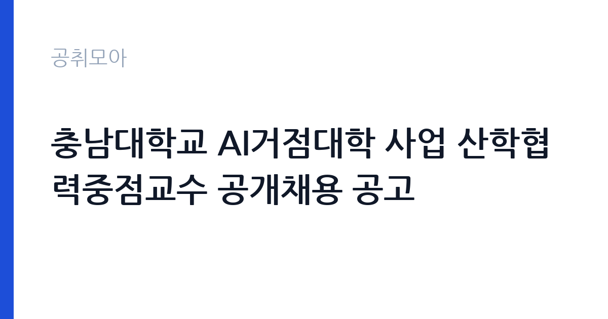

[국가기관] 충남대학교 AI거점대학 사업 산학협력중점교수 공개채용 공고
충남대학교 · 대전 · 마감 2026-10-26 (D-8) · 출처 나라일터

한눈에 보는 모집 조건
| 기관 | 충남대학교 |
|---|---|
| 공고명 | 충남대학교 AI거점대학 사업 산학협력중점교수 공개채용 공고 |
| 고용형태 | 정규직 |
| 근무지 | 대전 |
| 게시일 | 2026-10-19 |
| 마감일 | 2026-10-26 (D-8) |
지원자격, 이렇게 읽으세요
- 산학협력중점교수 4명
- 접수 ~2026-10-26 마감
- 세부 조건은 원문 공고문 확인
산학협력중점교수는 일반 전임 교원과 자격 체계가 다릅니다. 학위 요건과 함께 산업체 경력이 핵심 평가 요소이며, 관련 분야 실무 경력 연차가 공고문에 기준으로 제시됩니다. AI거점대학 사업은 지역 AI 인재 양성과 산학 협력 기반 구축을 목표로 하므로, AI·소프트웨어 기업이나 연구소에서 프로젝트를 수행한 이력이 중요합니다. 임용 즉시 근무가 가능해야 하고 국가공무원법상 결격사유가 없어야 합니다. 고용형태는 기간제이며, 계약 기간과 재계약 조건은 사업 기간에 연동됩니다.
이 공고의 포인트
이 자리의 매력은 역할의 폭입니다. 산학협력중점교수는 강의만 하는 직무가 아니라, 기업 수요를 교육과정으로 바꾸고 현장실습과 인턴십을 설계합니다. 산업체 네트워크를 그대로 활용할 수 있는 사람에게는 대학 안에서 사업을 만드는 권한이 주어지는 셈입니다. 4명을 한 번에 뽑는다는 점도 의미가 있습니다. AI 응용, 데이터, 산학 프로젝트 운영 등으로 역할이 나뉠 가능성이 커서, 본인의 산업 경력이 어느 영역에 맞는지 분명히 제시하는 전략이 유효합니다.
전형은 어떻게 진행되나
전형은 서류심사와 면접심사로 진행됩니다. 서류에서는 산업체 경력과 산학 협력 실적, 제출한 직무수행계획의 구체성을 평가합니다. 면접에서는 AI 산업에 대한 이해, 교육과정 설계 능력, 기업과의 협상 경험을 확인합니다. 접수는 이메일(dydwns7578@cnu.ac.kr)로만 받고, 마감은 2026년 10월 26일 오후 3시입니다. 제출서류에는 경력증명서와 직무수행계획서가 포함되므로, 계획서에 어떤 기업과 어떤 과제를 연계할지 구체적으로 적는 것이 서류 평가의 관건입니다.
원문에서 확인한 전형 방식
○ 선발직급 : 산학협력중점교수 4명 ○ 고용형태 : 기간제 ○ 접수기간 : 2026. 10. 19.(월) ~ 10. 26.(월) 15:00 ○ 응시방법 : 이메일 접수(dydwns7578@cnu.ac.kr) ○ 문의처 : 충남대학교 대학혁신지원과 ☎ 042-821-6094
이런 분께 추천해요
- AI·소프트웨어 기업에서 프로젝트를 이끌어본 실무 전문가
- 현장실습과 인턴십 프로그램을 설계해본 교육 담당자
- 기업 수요와 대학 교육을 연결하는 산학 협력 업무에 관심 있는 연구자
지원 전 체크리스트
- 산업체 경력 연차 요건을 충족하는가
- 직무수행계획서에 연계 기업과 과제를 구체적으로 적었는가
- 경력증명서로 재직 기간을 입증할 수 있는가
- 마감이 10월 26일 오후 3시임을 일정에 반영했는가
모집 일정과 제출 타이밍
접수는 2026년 10월 19일부터 26일 오후 3시까지입니다. 서류심사 결과와 면접 일정은 개별 통보되고, 최종합격 후 임용 시점은 사업 일정에 맞춰 정해집니다. 기간제 신분이므로 계약 기간이 정해져 있고, 재계약은 사업 성과와 예산에 따라 결정됩니다. 산학협력중점교수는 임용 후 산학 협력 실적을 주기적으로 평가받는 구조이므로, 지원 단계에서부터 1년차 목표를 수치로 잡아두는 편이 좋습니다.
직무 이해하기: 국가기관
업무는 크게 세 축입니다. 첫째, AI 분야 산학 협력 과제를 기획하고 기업과의 협약을 이끕니다. 둘째, 현장실습과 인턴십, 캡스톤 과제 같은 실무 교육을 설계하고 운영합니다. 셋째, 취업 연계와 창업 지원 프로그램을 기업 수요에 맞춰 조정합니다. 여기에 사업 성과지표 관리와 보고서 작성이 더해집니다. 강의 비중은 사업계획에 따라 달라지지만, 산학협력중점교수의 본질은 교육과 산업 현장을 연결하는 중개 역할에 있습니다.
자기소개서 작성 팁
직무수행계획서가 당락을 가릅니다. 막연히 산학 협력을 강화하겠다고 쓰지 말고, 연계 가능한 기업군과 구체적 과제, 예상 성과지표를 적으세요. 예를 들어 어떤 산업군의 어떤 문제를 학생 프로젝트로 풀고, 그 결과를 취업 연계로 이어붙이는 흐름을 한 페이지로 정리하면 설득력이 생깁니다. 자기소개서에서는 산업체 경력을 연차별로 나열하기보다 대표 프로젝트 두세 개를 골라 본인의 역할과 성과를 설명하세요. 교육 경험이 있다면 학생을 어떻게 가르쳤는지 구체적으로 쓰는 편이 좋습니다.
면접 준비 포인트
면접에서는 산업 현장 이해도와 교육 설계 능력을 함께 봅니다. 최근 AI 산업의 인력 수요가 어디로 움직이는지, 대학이 그 수요에 어떻게 대응해야 하는지에 대한 관점을 준비하세요. 기업 담당자와 협상하다 부딪힌 경험, 학생과 기업의 요구가 어긋날 때 조정한 사례도 좋은 소재입니다. 계약직 신분과 성과 평가 방식에 대한 이해를 확인하는 질문도 나옵니다. 답변은 산업 경험의 자랑이 아니라 대학 사업에서 무엇을 할 수 있는지로 마무리하는 것이 효과적입니다.
급여·근무조건 읽는 법
산학협력중점교수의 보수는 대학의 계약직 교원 보수 기준과 경력, 담당 업무에 따라 정해집니다. 이 공고문에는 금액이 명시되어 있지 않으므로, 정확한 보수는 원문 공고문의 보수 항목이나 충남대학교 대학혁신지원과(042-821-6094)로 확인해야 합니다. 전임 교원의 호봉 체계와는 다른 기준이 적용되고, 4대보험과 퇴직급여는 관련 법령과 대학 규정을 따릅니다. 계약 기간이 사업 기간에 묶여 있다는 점, 성과 평가가 재계약에 영향을 준다는 점을 함께 확인하고 지원 여부를 판단하세요.
자주 묻는 질문
- 산학협력중점교수도 교원인가요
대학의 교원 신분이지만 전임 교원과는 임용 절차와 계약 조건이 다릅니다. 이 공고의 고용형태는 기간제로 표시되어 있습니다. - 박사학위가 반드시 필요한가요
학위와 산업체 경력 요건이 함께 제시됩니다. 세부 기준은 원문 공고문의 응시자격 항목에서 확인해야 합니다. - 4명을 뽑으면 역할이 나뉘나요
채용 후 사업계획에 따라 역할이 배분됩니다. 지원 시 본인의 강점이 산학 과제 기획인지 교육 운영인지 분명히 밝히면 배치에 도움이 됩니다.
함께 보면 좋은 공고
[국가기관] 「충남대학교 AI인재양성부트캠프사업단」 전담직원(팀원) 공개 채용 공고 — 마감 2026-10-25[국가기관] 충남대학교 브랜드 단과대학 사업 연구교수 공개채용 공고 — 마감 2026-10-26[국가기관] 충남대학교 브랜드 단과대학 사업 기간제계약직(행정원) 공개채용 공고 — 마감 2026-10-26출처: 나라일터 공개정보를 바탕으로 공취모아가 정리한 안내글입니다. 모집 조건·일정은 변경될 수 있으니 지원 전 반드시 원문 공고문을 확인하세요. 본 글은 정보 제공용이며 합격을 보장하지 않습니다.